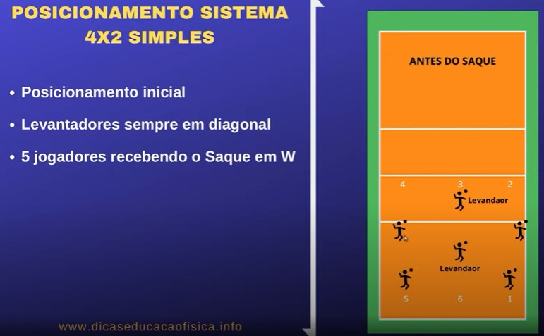
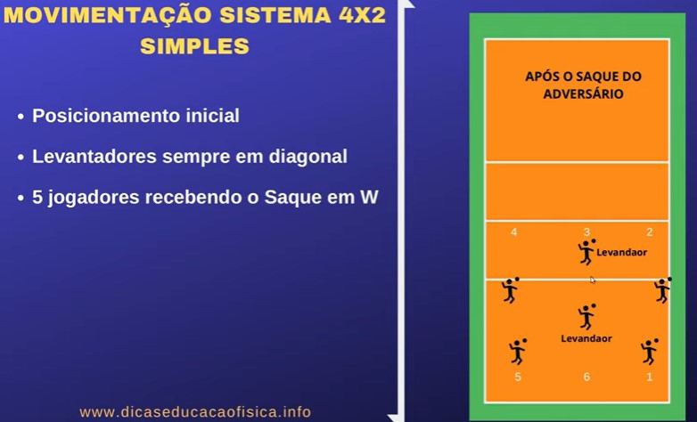
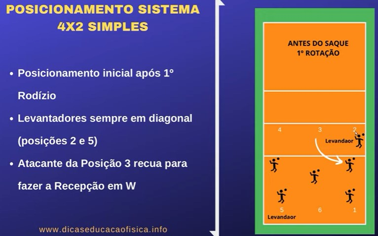
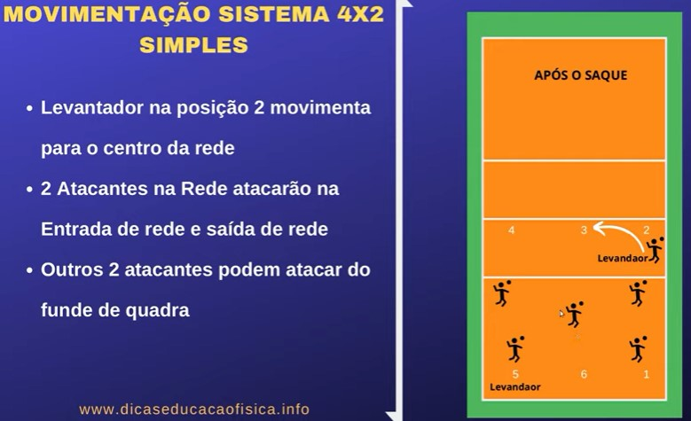
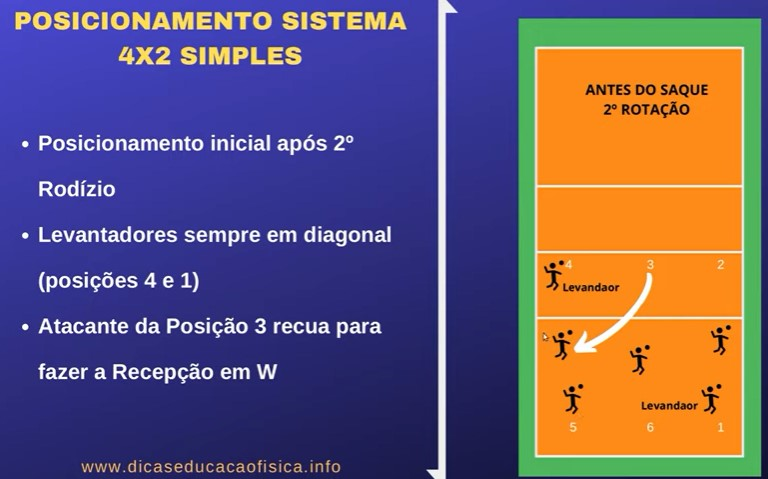
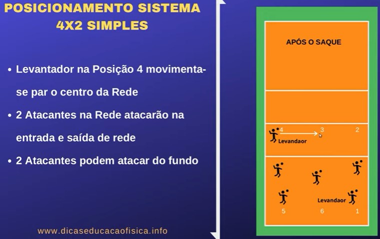

4-2
🏐
vôlei.com
4 x 2
Funciona assim: no sistema 4x2, o time passa a ter quatro atacantes e dois levantadores em lados opostos em quadra, que também podem atacar. O sistema tático inicial mais usado atualmente é o 5x1, quando há apenas um levantador.
  
  
↻↾DEPOIS REPETE DO COMEÇO⇃↻